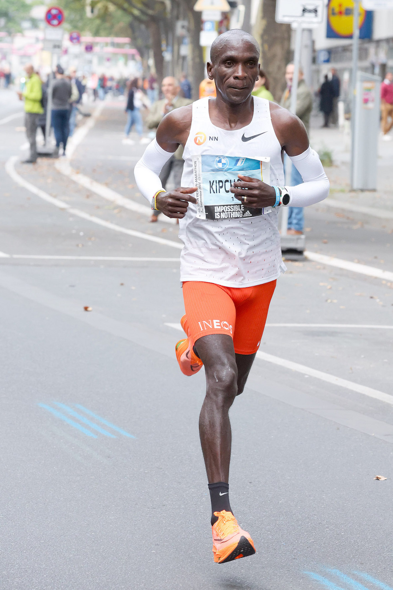
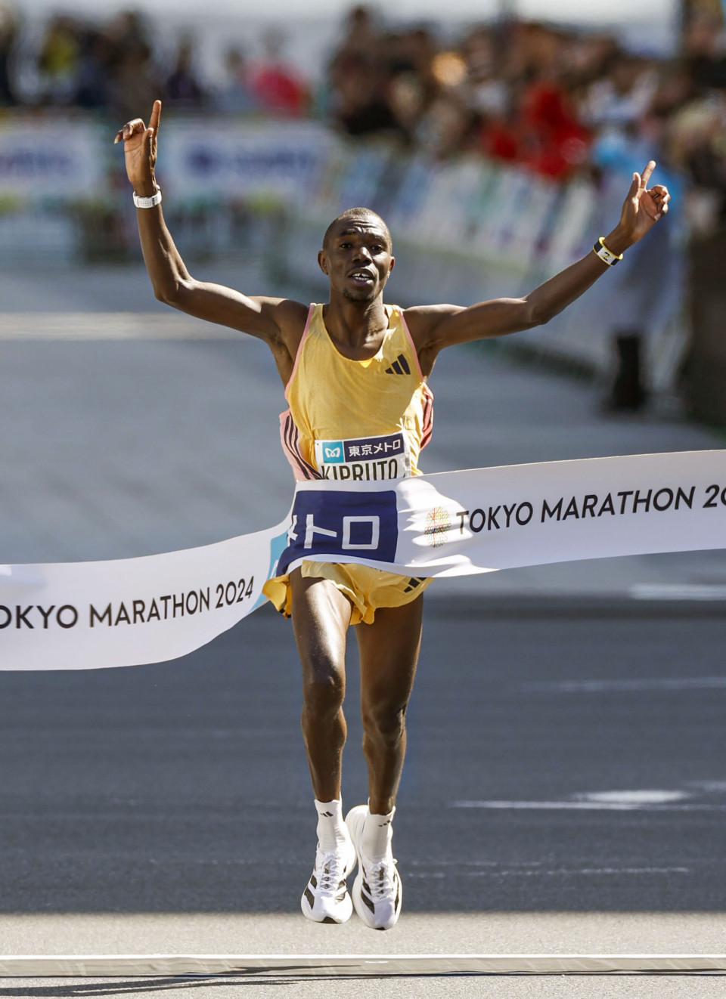
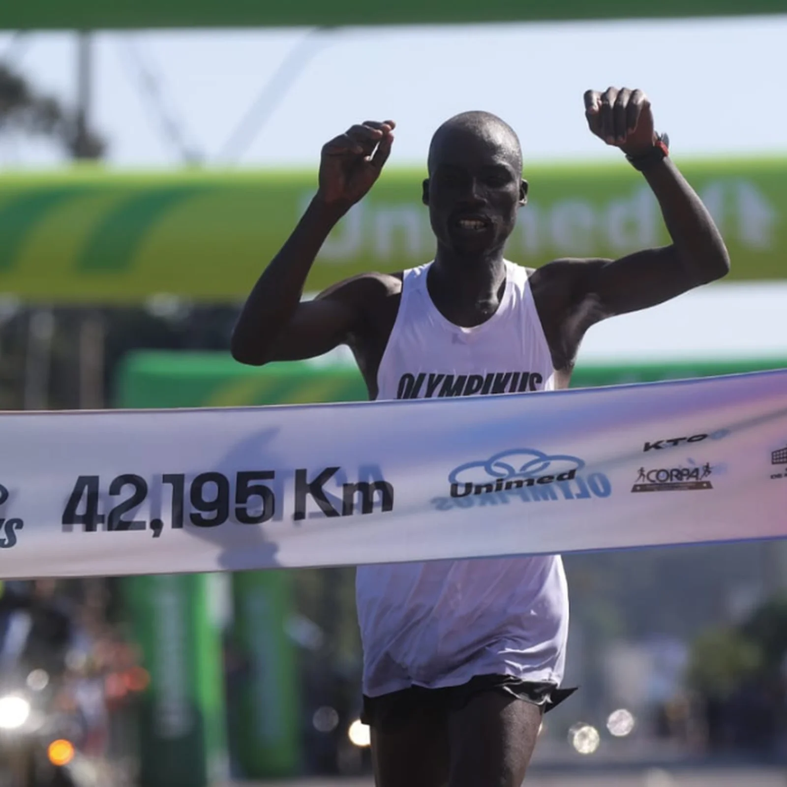
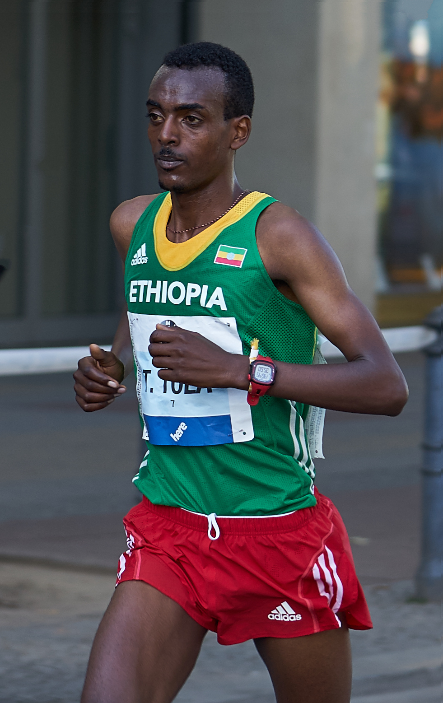
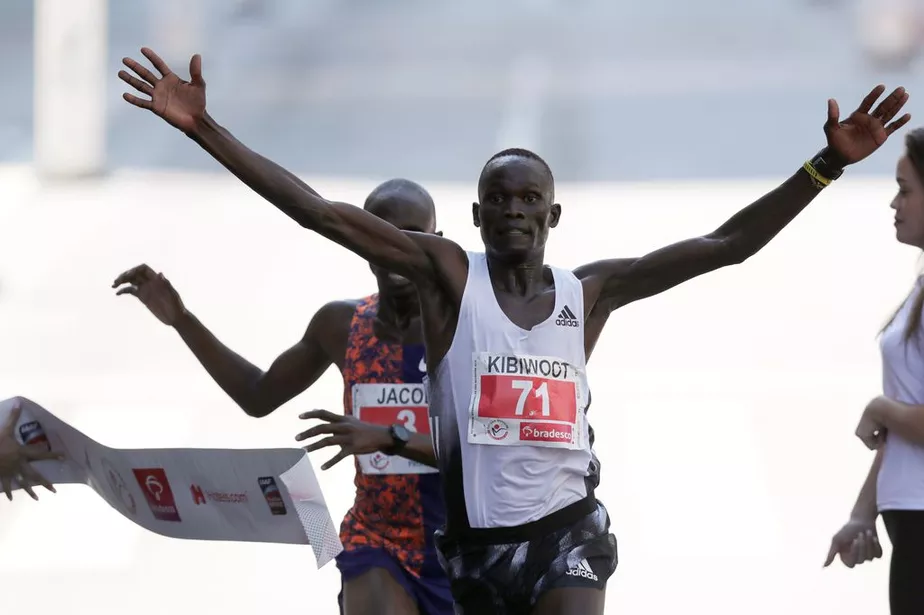
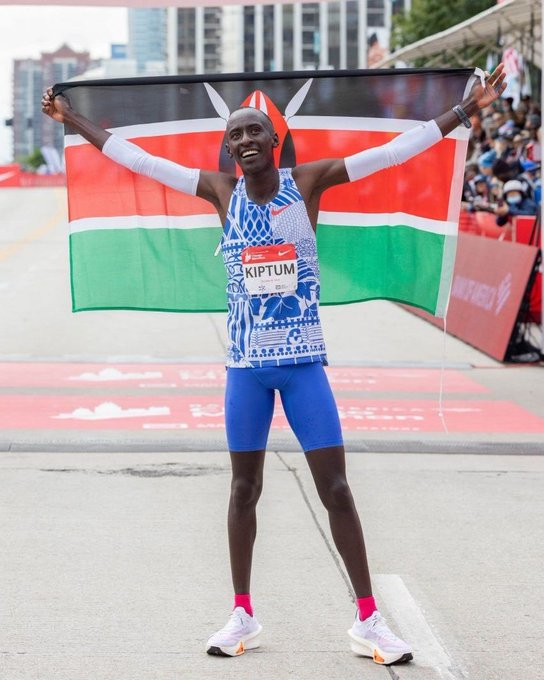
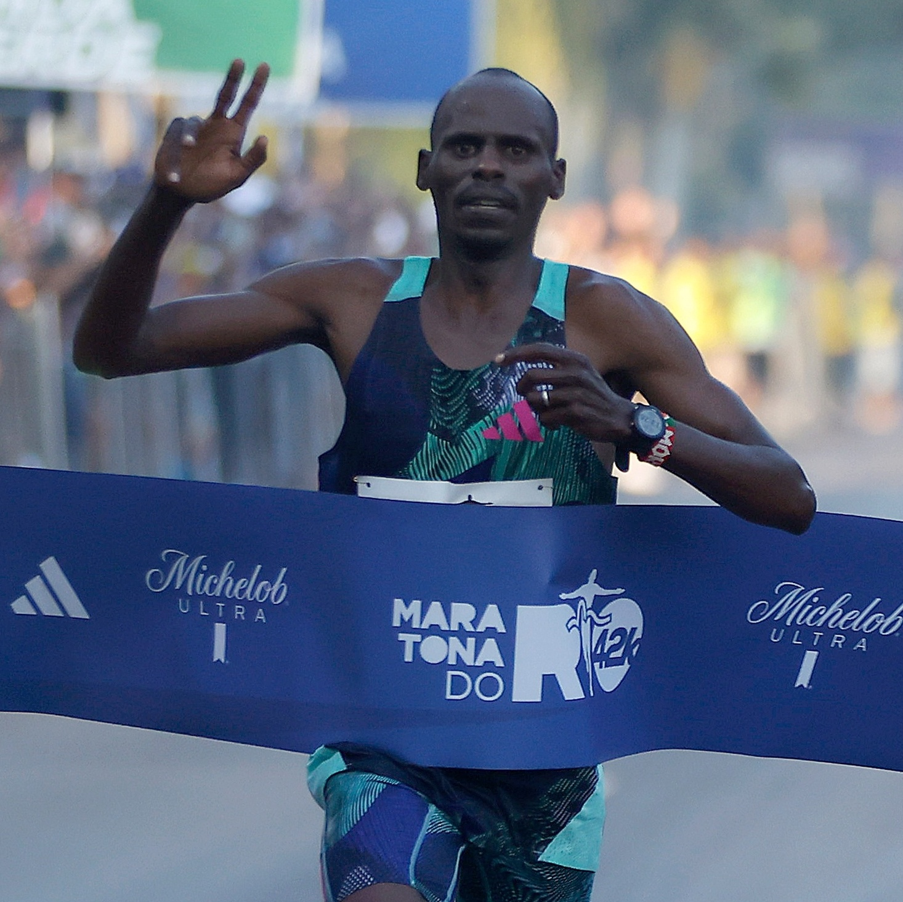

Uma das maiores maratonas do mundo.
Clique na imagem e confira as inscrições.

Eliud Kipchong , Tempo: 2h01min09s

Eliud Kipchong , Tempo: 2h02min37s

Benson Kipruto , Tempo: 2h02min16s

Maxwell Rotich , Tempo: 2h18min55s
Evans Chebet , Tempo: 2h05min54s

Tamirat Tola , Tempo: 2h04min58s

Kibwoot Kandie , Tempo: 42min59s

Kevin Kiptum , Tempo: 2h00min35s

Josphat Kiprotich , Tempo: 2h12min35s
Confira abaixo o Ticket Sports, onde você, corredor(a),
pode fazer sua inscrição em diversas provas.
Clique no card e descubra as várias opções que ele oferece!
Confira abaixo Strava, onde você, corredor(a),
Pode fazer e ver os seus treinos feitos e de seus amigos.
O app oferece tudo isso e como muito mais,
Clique no card e descubra as várias opções que ele oferce!